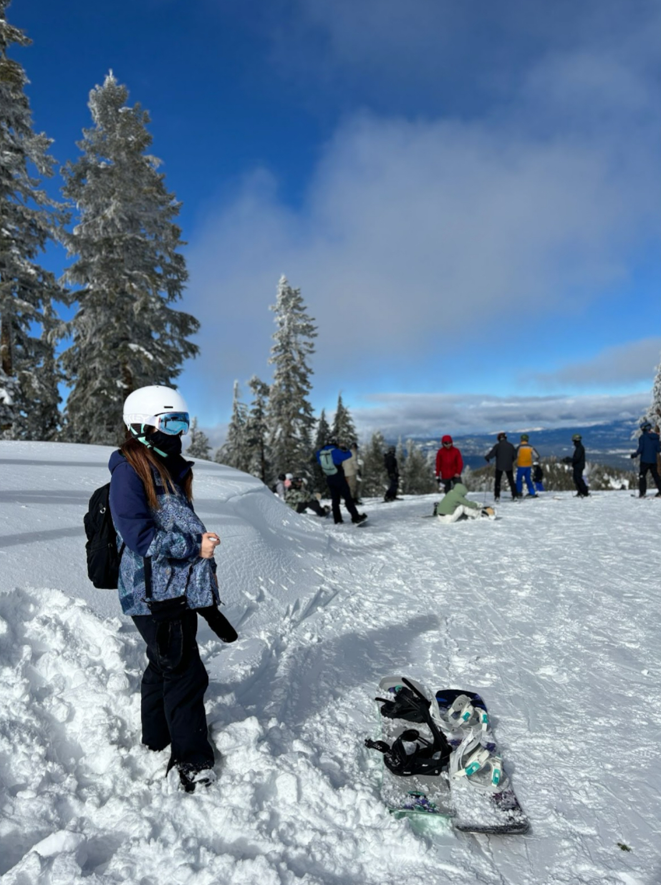

About
Hello! I am Ireen Jeang, a BFA Design and Technology student at Parsons School of Design. I was born in South Korea, but I am currently living in California.
Artistic Practice
As an interdisciplinary artist and designer, I use a variety of mediums in my works. I mostly combine art and technology to create interactive and immersive experiences for people to enjoy my works. I have always had a huge passion for art, but also math, computer science and programming. I wish to create works that people can engage in, exerience it physically, and immerse themselves into the story I create to show people new beauties that art and technology combined create.
Tools I Use In My Works
I use a variety of tools to create my works. For the digital side of my works, I like to use Blender to 3D model and print, HTML, CSS, and Javascript to create website and web applications, lasercutting, and microcontrollers such as Arduino. I have also been using p5.js to create art through code. This open source tool is a new experience for me, but I have been having fun creating small works in my classes.
For the physical art side of my works, I like to use craft materials to create three dimensional sculptural pieces. One material that I love using is light. Several of my past works have light in it. I like the way light expresses emotions very well in art. Also, I really like using mechanical clock parts, such as gears and screws. For two dimensional works, I use oil and acrylic paint as well as charcoal pencil and pens.
Interests
My favorite thing to do is snowboarding, so each year I only wait for winter to come and to be able to go down the snowy mountain slopes. I would also say that I love anything similar or related to snowboarding, such as surfing, wakeboarding, skateboarding and sandboarding. I guess I have something for those types of activities. Other than those activities,
Personal Motivation
One personal motivation or belief that I keep close to myself is to not waste time. The biggest regret that I have as an 18 year old person living in this world is the fact that looking back at my past, I used time extremely inefficiently and ineffectively. There are so many moments in the past where I want to really tell my past self to realize that time flows in the same speed for every single person in the world, but it is up to me to decide how I will use the time wisely. I saw how I lazy I was, using the time to be on my phone all the time, and pushing back the work that I had to do. However, I can't say that I have fully been taking action about this because I still find myself reaching for my phone or doing something that distracts me from getting things done and using that time to further improve myself.